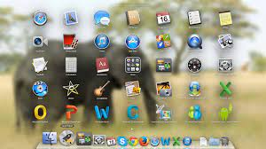

PROGRAMACION DE LAPSO 2021---2022
SISTEMAS OPERATIVOS MAC-OX
PROGRAMACION DE LAPSO 2021---2022
SISTEMAS OPERATIVOS MAC-OX
SISTEMAS OPERATIVOS MAC-OX
Mac OS X es un sistema operativo de Apple para equipos de sobremesa y también para portátiles. La versión actual se denomina “OS X Mavericks”. Respecto a sus diferencias con Windows, se podría decir que se diferencia en todo: OS X se basa en Unix y usa HFS+ para integrar un sistema de archivos propiomacOS es una serie de sistemas operativos gráficos desarrollados y comercializados por Apple desde 2001. Es el sistema operativo principal para la familia de computadoras Mac de Apple.
Es un programa o conjunto de programas de un sistema informático que gestiona los recursos de hardware y provee servicios a los programas de aplicación de software, ejecutándose en modo privilegiado respecto de los restantes (SON LOS QUE ADMNISTRAN LOS RECURSOS DEL COMPUTADOR) 1.Rendimiento espectacular
Rendimiento optimo para las especificaciones que buscamos a la hora de escoger un equipo. Si necesitas un equipo profesional escoge un MacBook Pro o un iMac, si tus necesidades no son tan elevadas, escoge un MacBook 12” o un MacBook Air. Elijas la opción que elijas, el rendimiento siempre será ideal.
2.Diseño muy cuidado
Por todos es conocido el nivel de diseño y detalle que Apple dedica a sus equipos.
3.Software y hardware dedicado
Los equipos Apple trabajan con un sistema operativo exclusivo para estos equipos y lo mismo sucede con el hardware. Esto provoca que el sistema operativo optimice el funcionamiento del equipo, convirtiéndolos en equipos muy estables y que sacan el máximo provecho de su hardware. Además, Apple lanza constantemente actualizaciones de su sistema operativo de forma gratuita que optimizará todavía más tu equipo, por muy antiguo que sea.
4.macOS es completamente estable
Olvídate de problemas con el sistema operativo de Apple. En un Mac prácticamente no hay cuelgues, errores o bugs. Olvídate del Control-ALT-Suprimir, ya no lo utilizarás nunca más. Por cierto, también existe en Mac mediante la combinación de teclas Opción-Comando-Esc
5.Mayor productividad
En Apple todo es mucho más intuitivo y nos empuja a ser más creativos. Es cierto que al principio podemos abrumarnos un poco, especialmente si venimos de Windows ya que hay ciertos aspectos que son distintos que en Windows, pero en poco tiempo te darás cuenta de lo fácil que son las cosas en Mac. Esta facilidad se traduce en un aumento de la productividad con tu equipo. Apple dispone de herramientas de trabajo que son exclusivas de Mac, que funcionan de maravilla como iMovie o GarageBand. Además, en Mac disponemos de programas especializados como Final Cut Pro X, considerada el mejor programa para la edición de video. En Mac, lo sacas de la caja, empiezas a crear y ya eres creativo..
5.En Mac no hay virus (o casi)
Con un Mac no es necesario instalar ningún antivirus y todo lo que ello no comporta. Últimamente han aparecido algunos pocos virus para Mac, seguramente debido a que es una plataforma que se ha extendido en los últimos años. Apple lanza actualizaciones de su sistema operativo, corrigiendo posibles anomalías en su sistema que puede hacerlo vulnerable a estos virus.
Ojo, que no existan virus no significa que no exista malware, troyanos, fishing… desgraciadamente todas las plataformas pueden verse afectadas por personas malintencionadas que tratan de robarnos nuestra tarjeta de crédito o acceder a nuestro ordenador sin nuestro permiso y Apple no es diferente en eso. Verás que cuando navegues por Internet, en ocasiones aparecerán ventanas que intentan confundirnos indicando que hay algo que no funciona bien en tu equipo y que debes instalar una aplicación para solucionarlo (muchas veces un programa llamado MacKeeper). Haz caso omiso de esos mensajes y cierra la ventana y nunca instales MacKeeper ya que es un programa malware que puede desestabilizar el sistema operativo. Entra en la carpeta Aplicaciones y busca esta aplicación, si la tienes instalada, elimínala arrastrándola a la Papelera.
5.Compatibilidad de Mac con Windows
Este es uno de los grandes miedos de aquellos que provienen de un Windows ya que existe un cierto pánico (completamente injustificado) a no poder utilizar programas o abrir archivos que anteriormente utilizábamos en Windows. Nada más alejado de la realidad, de hecho la incompatibilidad se produce, en la mayoría de los casos, en sentido inverso. Es decir, es menos compatible abrir archivos de Mac en un Windows que archivos de Windows en un Mac. Además, en un Mac siempre tenemos el recurso de instalar el sistema operativo de Windows en una partición del disco. Es realmente fácil de hacer. Muchos usuarios que vienen de Windows lo instalan cuando compran su primer Mac.
Por otro lado, si tu duda es si podrás abrir archivos de Microsoft Office (Word, Excel, PowerPoint, etc) la respuesta es SI, sin ningún problema. Existe la versión de todos estos programas para Mac. En esta entrada te explicamos como instalar Office en un Mac..
6.Tienen la mejor interfaz grafica del mercado
7.Son ideales para diseños graficos
8.Es uno de los mas estables
9.No adquiere virus
1.Lo de siempre: el precio alto
Todos sabemos que los precios de los equipos Apple no son económicos pero también si pretendemos comparar debemos hacerlo de manera justa. No es lo mismo un portátil Windows de 400€ que un MacBook Pro de 2.500€, definitivamente no ofrecen las mismas prestaciones ni los acabados son los mismos. Además, Apple ofrece equipos ya preparados para que tengan un rendimiento óptimo y desde el primer día, sin fallos y completamente estable. Por otro lado, hay quien no necesita tanta potencia o un rendimiento tan optimizado y prefiere destinar un presupuesto menor en su equipo.
2.
Equipos no ampliables
Una vez compras un Mac, al menos en los equipos más actuales, no podrás modificarlo. En el momento de la compra tendrás que decidir el procesador que deseas, la memoria RAM y el almacenamiento del disco. Si tus necesidades varían a lo largo del tiempo, tendrás que cambiar de equipo ya que no podrás ampliarlo más adelante. Obviamente, en el caso del almacenamiento siempre podemos utilizar un disco externo a nuestro antojo.
3.No son equipos para gamers
Los equipos Apple son ordenadores muy potentes, que cumplen sobradamente con las especificaciones técnicas necesarias para poder ejecutar juegos en él. Pese a ello, el catálogo de juegos para Mac es muy corto. No compres un Mac si quieres destinarlo a juegos.
4.Existen pocos software para este sistema operativo
5.Es mas complicado de encontrar tecnicos que las puedan arreglar en caso de fallas
7.Es deconocido y solamente se venden con el equipo incluido
1. Quemado de discos — Mejor soporte en el Finder así como en iTunes..
2.Reproductor de DVD — Los discos DVD podían ser reproducidos en el Reproductor de DVD de Apple.
3.El usuario debe realizar cursos para el manejo del sistema como tal debido a su alta capacidad de uso.Mayor soporte para impresoras (200 impresoras soportadas out of the box) — Una de las principales quejas de los usuarios de la versión 10.0 fue la carencía de controladores para impresoras.
4.3D mejorado (OpenGL corre un 20% más rápido) — Los drivers de OpenGL fueron bastamente mejorados para esta versión del Mac OS X, el cual permitió un gran rendimiento para elementos 3D en la interfaz y aplicaciones en 3D.
5.AppleScript mejorado — La interfaz de scripts ahora permite acceso a muchos componentes del sistema, como la central de impresión, y el Terminal, lo que permite mejorar la personalización de la interfaz. También, Apple introdujo AppleScript Studio, lo que permite al usuario crear aplicaciones completas en AppleScript en una interfaz gráfica simple.
6 .ColorSync 4.0, el gestor del color del sistema.
7 .Image Capture, para descargar imágenes de cámaras digitales y escáneres.
8. OTRAS CARASTERISTICAS
Mac OS (del inglés Macintosh Operating System, en español Sistema Operativo de Macintosh) es el nombre del sistema operativo creado por Apple para su línea de computadoras Macintosh. Es conocido por haber sido el primer sistema dirigido al gran público en contar con una interfaz gráfica compuesta por la interacción del mouse con ventanas, Icono y menús.
Apple quitó importancia de forma deliberada a la existencia del sistema operativo en los primeros años de su línea Macintosh procurando que la máquina resultara más agradable al usuario, diferenciándolo de otros sistemas contemporáneos, como MS-DOS, que eran un desafío técnico. El equipo de desarrollo del Mac OS original incluía a Bill Atkinson, Jef Raskin y Andy Hertzfeld.
Esta fue la base del Mac OS clásico, desarrollado íntegramente por Apple, cuya primera versión vio la luz en 1984. Su desarrollo se extendería en un modelo progresivo hasta la versión 9 del sistema, lanzada en 1999. A partir de Mac OS X, el sistema es un derivado de Unix que mantiene en su interfaz gráfica muchos elementos de las versiones anteriores.
SISTEMAS OPERATIVOS
VENTAJAS DE LOS SISTEMAS OPERATIVOS MAC-OX
DESVENTAJAS DE LOS SISTEMAS OPERATIVOS MAC-OX
CARACTERISTICAS DE LOS SISTEMAS OPERATIVOS MAX-OX
1_. No hay disco duro “C”
2_. Este O.S fue creado por la empresa Apple.
3_. Tiene una línea de computadoras llamadas Macintosh.
4_. Posee varias versiones.
5_. Es muy conocido por ser uno de los primeros O.S dirigidos al público.
6_. Fue una de las primeras en Poseer Interfaz Gráfica.
7. Este O.S nació en 1985.
8_. Es muy complicado encontrar gente que arreglen este tipo de Computadoras. Te permite hacer uso de tu computadora a través de una interfaz gráfica
IMPORTANCIADE LOS SISTEMAS OPERATIVOS MAC-OX
Con el trabajo realizado, encontré que el Sistema Operativo Mac es muy bueno por las razones de que no posee virus por lo que los convierte en accesos directos y a mas que tiene la mejor interfaz gráfica del mundo. Detrás de cada Mac está la potencia de macos, un sistema operativo que te permite hacer cosas que sencillamente serían imposibles de hacer en otra computadora. Eso se debe a que está diseñado específicamente para el hardware en el que está instalado, y viceversa. Macos viene con un conjunto de App que tienen un diseño increíble. Y funciona en sintonía con incluid para que las fotos, los documentos y demás archivos siempre estén actualizados en todos tus dispositivos. Por eso tu Mac y tu iPhone se entienden a la perfección. Además, está totalmente pensado para proteger tu privacidad y tu seguridad.
Macos incluye una amplia gama de tecnologías para ayudar a las personas con alguna discapacidad a experimentar todo lo que el Mac tiene para ofrecer, así como funcionalidades que no encontrarás en otros sistemas operativos. Estas incluyen Teclado de Accesibilidad, VoiceOver, FaceTime6, Control por Botón y Texto a Voz, todas diseñadas para que puedas aprovechar tu Mac al máximo.